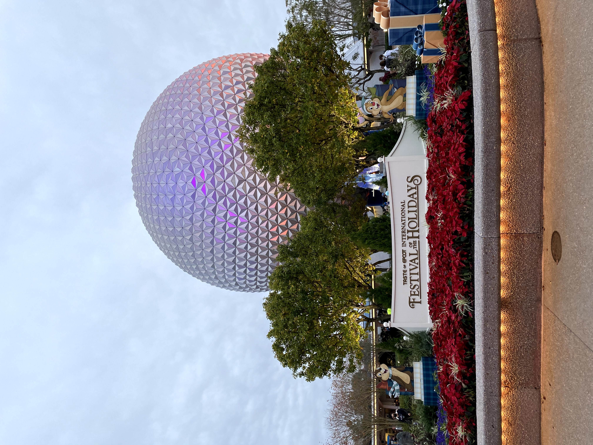
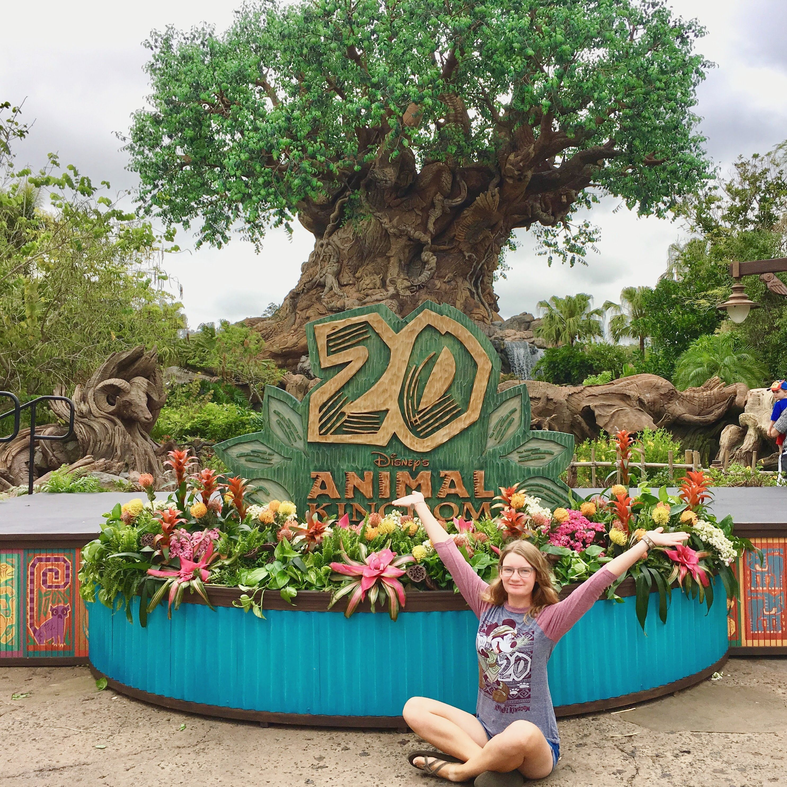

Throught the years, Walt Disney World has been increasing it's offerings for accessibility in their parks. From mobility to visual impariments, Disney is constantly adjusting their services to better assist guests. Because Disney updates their services often, it can be confusing to identify what assistance may be available to you. This beta website aims to collect information on these services to help make trips to the theme parks less stressful and accesible to more guests.
About Me: Emmy Thompson
I am a current UX research/design graduate student at the University of Michigan. I obtained my B.S. in Psychology at Florida State University in 2020. My focus area is in creating digital tools that focus on universal design. In 2018, I worked at Walt Disney World in the Disney College Program and this summer I will be interning at the Disney Animation Studios working on product design. Disney has always been a personal passion for me, and I hope to be able to spread it's magic with others.
